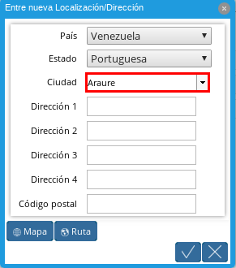
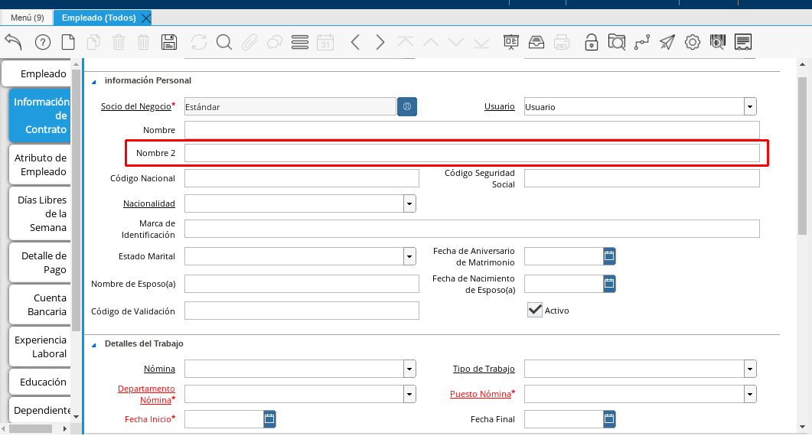
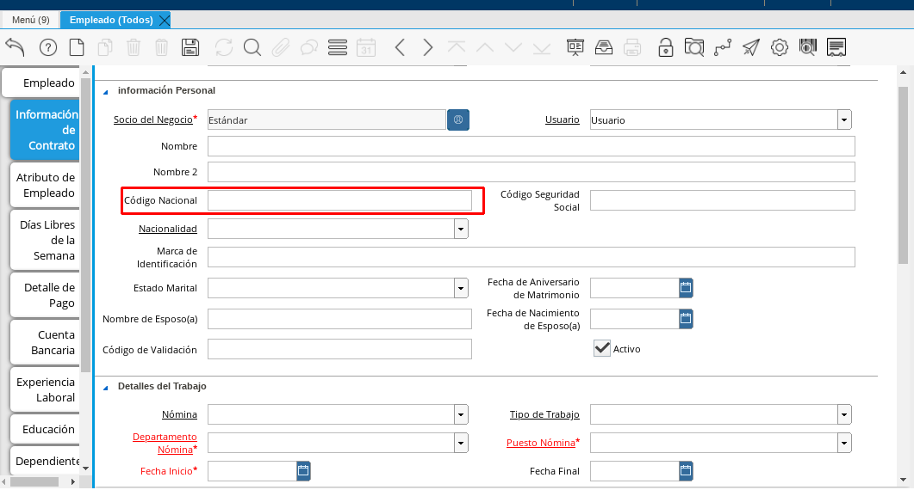
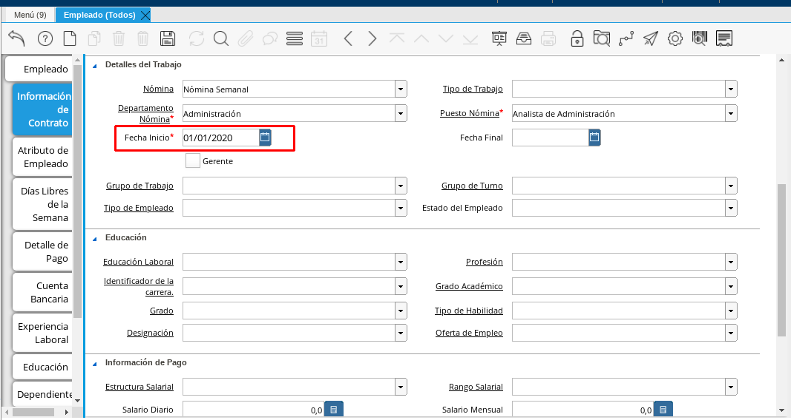
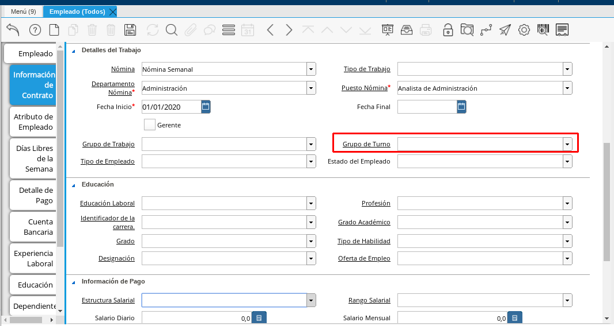
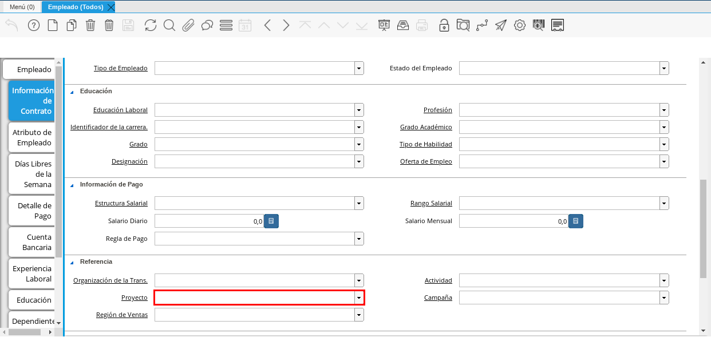
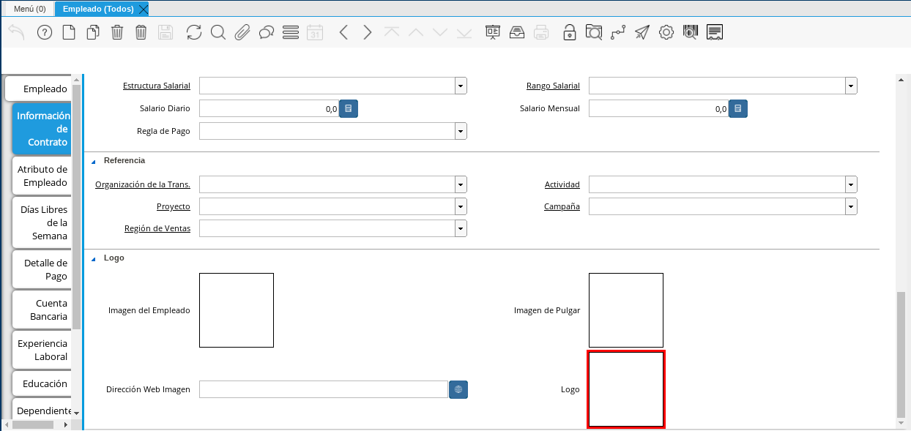
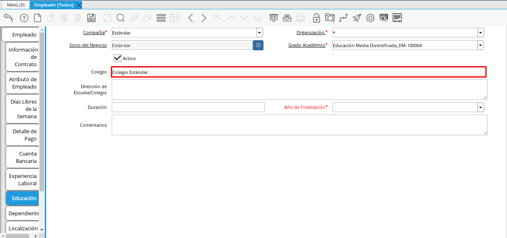

Registro de Empleado¶
En el menú de ADempiere, ubique y seleccione la carpeta “Gestión de Recursos Humanos y Nómina”, luego seleccione la carpeta “Recursos Humanos”, por último seleccione la carpeta “Configuración de Empleado” y la ventana “Empleado (Todos)”.
Imagen 1. Menú de ADempiere

En la ventana “Empleado (Todos)”, se registran todos los datos personales y laborales que la empresa requiere del socio del negocio empleado, los mismos son utilizados y actualizados a lo largo de su período laboral en dicha empresa. La información del empleado desde el momento en el que inicia su período laboral, hasta el momento actual o el momento en el que termina, se encuentra distribuida en la ventana principal “Empleado” y sus (11) once pestañas, explicadas a continuación.
Note
Cada uno de los campos con el símbolo (*) son obligatorios para el registro.
A continuación podrá apreciar la ventana “Empleado (Todos)”, dónde debe seleccionar el icono de “Registro Nuevo” que se encuentra ubicado en la barra de herramientas de ADempiere.
Imagen 2. Ventana Principal Empleados (Todos)

Proceda al llenado de los campos necesarios que a continuación se detallan.
Seleccione en el campo “Compañía”, la compañía para la cual esta registrando el socio del negocio empleado.
Imagen 3. Campo Compañía
Seleccione en el campo “Organización”, la organización para la cual esta registrando el socio del negocio empleado.
Imagen 4. Campo Organización
Warning
Para que el socio del negocio este disponible para todas las organizaciones, el mismo deberá estar registrado con la organización en (*), de lo contrario el socio del negocio solo estará disponible para una sola organización.
Introduzca el código de identificación, cédula o rif del socio del negocio en el campo “Código”, el valor introducido en este campo automáticamente se reflejará en el campo “Número Identificación”.
Imagen 5. Campo Código
Warning
Se recomienda que al ingresar el valor al campo “Código” no se ingrese ningún prefijo, punto, guion o cualquier otro carácter.
Introduzca los (2) dos nombres del socio del negocio empleado en el campo “Nombre”.
Imagen 6. Campo Nombre
Note
Si el socio del negocio que esta registrando posee solo un nombre, se debe ingresar solo ese nombre que posee.
Introduzca en el campo “Nombre 2”, los (2) dos apellidos del socio del negocio empleado.
Imagen 7. Campo Nombre 2
Note
Si el socio del negocio que esta registrando posee solo un apellido, se debe ingresar solo ese apellido que posee.
Introduzca en el campo “Descripción”, una descripción corta con respecto al socio del negocio empleado.
Imagen 8. Campo Descripción
Seleccione el grupo de socio del negocio al que pertenezca el socio del negocio que esta registrando, para este ejemplo el grupo utilizado es “Empleados”.
Imagen 9. Campo Grupo de Socio del Negocio
Seleccione en el campo “Regla de Pago” la forma de pago para las facturas, este campo indica de que forma serán pagadas las facturas al socio del negocio empleado.
Imagen 10. Campo Regla de Pago
Introduzca en el campo “Dirección Web”, la dirección web para contactar al empleado, ya que es muy común que un empleado no posea una página web se puede ingresar una cuenta linkedin, bumeran, entre otros.
Imagen 11. Campo Dirección Web
Seleccione en el campo “Genero”, el genero del socio del negocio que esta registrando. Para ejemplificar el registro se utiliza el genero “Femenino”.
Imagen 12. Campo Genero
Seleccione en el campo “Grupo Sanguíneo”, el grupo sanguíneo del socio del negocio que esta registrando. Para ejemplificar el registro se utiliza el grupo sanguíneo “B +”.
Imagen 13. Campo Grupo Sanguíneo
Seleccione en el campo “Cumpleaños”, la fecha de nacimiento del socio del negocio que esta registrando.
Imagen 14. Campo Cumpleaños
Ingrese en el campo “Lugar de Nacimiento (Localización)”, el lugar de nacimiento del socio del negocio que esta registrando, con ayuda del identificador.
Imagen 15. Campo Lugar de Nacimiento (Localización)
Seleccione en el campo “País”, el país donde nació el socio del negocio que esta registrando. Para ejemplificar el registro se utiliza el país “Venezuela”.
Imagen 16. Campo País
Seleccione en el campo “Estado”, el estado donde nació el socio del negocio que esta registrando. Para ejemplificar el registro se utiliza el estado “Portuguesa”.
Imagen 17. Campo Estado
Seleccione en el campo “Ciudad”, la ciudad donde nació el socio del negocio que esta registrando. Para ejemplificar el registro se utiliza la ciudad “Araure”.

Imagen 18. Campo Ciudad
Introduzca en el campo “Dirección 1”, la dirección detallada del lugar donde nació el socio del negocio que esta registrando. Para ejemplificar el registro se utiliza la dirección “Av Dr Rafael Caldera”.
Imagen 19. Campo Dirección 1
Introduzca en el campo “Dirección 2”, el nombre del lugar donde nació el socio del negocio que esta registrando. Para ejemplificar el registro se utiliza el nombre “Hospital J.M. Casal Ramos”.
Imagen 20. Campo Dirección 2
Introduzca en el campo “Código Postal”, el código postal de la ciudad donde nació el socio del negocio que esta registrando. Para ejemplificar el registro se utiliza el código “3301”.
Imagen 21. Campo Código Postal
Seleccione la opción “OK”, para cargar el registro al campo “Lugar de Nacimiento”.
Imagen 22. Opción OK
Seleccione en el campo “Estado Marital”, el estado civil del socio del negocio que esta registrando. Para ejemplificar el registro se utiliza el estado marital “Casado”.
Imagen 23. Campo Estado Marital


Seleccione el icono “Guardar Cambios” ubicado en la barra de herramientas para guardar los datos ingresados.
Imagen 24. Icono Guardar Cambios

Warning
Recuerde guardar el registro de los campos cada vez que se vaya a posicionar en una pestaña de la ventana empleado (todos).
Pestaña Información de Contrato¶
La información ingresada en esta pestaña puede variar al momento de la elaboración del contrato, dependiendo de la situación en la que se encuentre el socio del negocio que esta registrando. Un mismo socio del negocio puede tener un “Estado Marital” en un contrato y otro en su siguiente contrato, lo mismo sucede con cada uno de los grupos de campos que contiene la pestaña “Información de Contrato”.
Seleccione la pestaña “Información de Contrato” y proceda al llenado de los campos correspondientes.
Warning
La Información de Contrato se debe realizar con la Organización a la Pertenezca el empleado, por eso debe Cambiar La Organización de (*) a la Organización Principal del Empleado.
Imagen 25. Pestaña Información de Contrato
Introduzca en el campo “Nombre”, los (2) dos nombres de la persona a quien va emitido el contrato.
Imagen 26. Campo Nombre
Note
Se ingresa la información del representante legal del socio del negocio empleado, cuando este es menor de edad al momento de la elaboración del contrato de trabajo.
Introduzca en el campo “Nombre 2”, los (2) dos apellidos de la persona a quien va emitido el contrato.

Imagen 27. Campo Nombre 2
Note
Se ingresa la información del representante legal del socio del negocio empleado, cuando este es menor de edad al momento de la elaboración del contrato de trabajo.
Introduzca en el campo “Código Nacional”, el código que identifica al socio del negocio empleado, este código es diferente a la cédula.

Imagen 28. Campo Código Nacional
Warning
Se recomienda que al ingresar el valor al campo “Código Nacional” no se ingrese ningún prefijo, punto, guion o cualquier otro carácter.
Introduzca en el campo “Código Seguridad Social”, el código del seguro social de la persona a quien va emitido el contrato.
Imagen 29. Campo Código Seguridad Social
Note
El código de seguridad social se refiere al código del seguro social del empleado, es decir, la cédula del empleado.
Seleccione en el campo “Nacionalidad”, la nacionalidad de la persona a quien va emitido el contrato.
Imagen 30. Campo Nacionalidad
Introduzca en el campo “Marca de Identificación”, una descripción que identifica al socio del negocio empleado.
Imagen 31. Campo Marca de Identificación
Introduzca en el campo “Estado Marital”, el estado marital de la persona a quien va emitido el contrato.
Imagen 32. Campo Estado Marital
Introduzca en el campo “Nombre de Esposo(a)”, el nombre del esposo(a) de la persona a quien va emitido el contrato.
Imagen 33. Campo Nombre de Esposo(a)
Seleccione en el campo “Fecha de Aniversario de Matrimonio”, la fecha en la que se realizó el matrimonio.
Imagen 34. Campo Fecha de Aniversario de Matrimonio
Seleccione en el campo “Fecha de Nacimiento de Esposo(a)”, la fecha en la que nació el esposo(a).
Imagen 35. Campo Fecha de Nacimiento de Esposo(a)
Introduzca en el campo “Código de Validación”, el código de marcaje del empleado en la empresa.
Imagen 36. Código de Validación
Seleccione en el campo “Nómina”, la nómina regular establecida para cada Empleado. Adempiere presenta las siguientes nóminas cuando el empleado posee un Salario Fijo (Nómina Semanal, Nómina Quincenal y Nómina Mensual), en cambio si el Empleado Posee un Salario Variable se encuentras disponibles (Nómina Semanal Mixta, Nómina Quincenal Mixta y Nómina Mensual Mixta)
Imagen 37. Campo Nómina
Seleccione en el campo “Departamento Nómina”, el departamento al que pertenece el socio del negocio que esta resgistrando.
Imagen 38. Campo Departamento Nómina
Seleccione en el campo “Puesto Nómina”, el puesto que tiene el socio del negocio que esta registrando.
Imagen 39. Campo Puesto Nómina
Seleccione en el campo “Tipo de Trabajo”, el trabajo a desempeñar por el empleado en la empresa.
Imagen 4. Campo Tipo de Trabajo
Introduzca en el campo “Fecha de Inicio”, la fecha de inicio del contrato que se esta creando.

Imagen 4. Campo Fecha de Inicio
Seleccione en el campo “Fecha Final”, la fecha de culminación del contrato del socio del negocio que esta registrando.
Imagen 42. Campo Fecha Final
Warning
La fecha final del contrato depende del lapso de duración de contratos que las empresas tengan establecido como políticas de contratación.
Seleccione el checklist “Gerente”, para indicar que el socio del negocio que esta registrando es un gerente.
Imagen 43. Campo Gerente
Seleccione en el campo “Grupo de Trabajo”, el grupo de trabajo al que pertenece el socio del negocio que esta registrando.
Imagen 44. Campo Grupo de Trabajo
Seleccione en el campo “Tipo de Empleado”, el tipo de empleado al que pertenece el socio del negocio que esta registrando.
Imagen 45. Campon Tipo de Empleado
Seleccione en el campo “Grupo de Turno”, el grupo de turno al que pertenece el socio del negocio que esta registrando.

Imagen 46. Campo Grupo de Turno
Seleccione en el campo “Estado del Empleado”, el estado en el que se encuentra el empleado durante la fecha de inicio y final del contrato.
Imagen 47. Campo Estado del Empleado
Seleccione en el campo “Educación Laboral”, la educación laboral del socio del negocio que esta registrando.
Imagen 48. Campo Educación Laboral
Seleccione en el campo “Identificador de la Carrera”, la carrera del socio del negocio que esta registrando.
Imagen 49. Campo Identificador de la Carrera
Seleccione en el campo “Grado”, el grado de instrucción del socio del negocio que esta registrando.
Imagen 50. Campo Grado
Seleccione en el campo “Designación”, la designación del socio del negocio que esta registrando.
Imagen 51. Campo Designación
Seleccione en el campo “Profesión”, la profesión del socio del negocio que esta registrando.
Imagen 52. Campo Profesión
Seleccione en el campo “Grado Académico”, nivel de instrucción del socio del negocio que esta registrando.
Imagen 53. Campo Grado Académico
Seleccione en el campo “Tipo de Habilidad”, el tipo de habilidad del socio del negocio que esta registrando.
Imagen 54. Campo Tipo de Habilidad
Seleccione en el campo “Oferta de Empleo”, la oferta de empleo del socio del negocio que esta registrando.
Imagen 55. Campo Oferta de Empleo
Seleccione en el campo “Estructura Salarial”, la estructura salarial del socio del negocio que esta registrando.
Imagen 56. Campo Estructura Salarial
Introduzca en el campo “Salario Diario”, el salario diario que le corresponde al socio del negocio que esta registrando.
Imagen 57. Campo Salario Diario
Seleccione en el campo “Regla de Pago”, la regla de pago establecida para el socio del negocio que esta registrando.
Imagen 58. Campo Regla de Pago
Seleccione en el campo “Rango Salarial”, el rango salarial del socio del negocio que esta registrando.
Imagen 59. Campo Rango Salarial
Introduzca en el campo “Salario Mensual”, el salario mensual del socio del negocio que esta registrando.
Imagen 60. Campo Salario Mensual
Seleccione en el campo “Organización de la Transacción”, la organización de la transacción.
Imagen 61. Campo Organización de la Transacción
Seleccione en el campo “Proyecto”, el proyecto financiero.

Imagen 62. Campo Proyecto
Seleccione en el campo “Región de Ventas”, la región de ventas asignada al socio del negocio empleado para cubrir las transacciones que la empresa posee en dicha región.
Imagen 63. Campo Región de Ventas
Seleccione la actividad en el campo “Actividad”.
Imagen 64. Campo Actividad
Seleccione la campaña en el campo “Campaña”.
Imagen 65. Campo Campaña
Seleccione en el campo “Imagen del Empleado”, la foto o imagen del socio del negocio empleado que esta registrando.
Imagen 66. Campo Imagen del Empleado
Introduzca en el campo “Dirección Web”, la dirección web de la foto o imagen del socio del negocio que esta registrando.
Imagen 67. Campo Dirección Web
Seleccione en el campo “Imagen del Pulgar”, la imagen del pulgar del socio del negocio que esta registrando.
Imagen 68. Campo Imagen del Pulgar
Seleccione en el campo “Logo”, el logo de la empresa.

Imagen 69. Logo


Warning
Recuerde guardar el registro de los campos cada vez que se vaya a posicionar en una pestaña de la ventana empleado (todos).
Pestaña Atributo de Empleado¶
En una empresa los empleados poseen caracteristicas diferentes, Estas caracteristicas en Adempiere son llamadas Atributos. Un Atributo puede ser el Salario Diario de cada Empleado, El factor ARI, Una Deducción por un Préstamo, etc. Los mismos son definidos en la pestaña “Atributo de Empleado” para que sean aplicados a la nómina al momento de la ejecución. Los valores de estos atributos varian según el tipo de Concepto de Nómina. Cabe Destacar que un empleados puede poseer diferentes atributos.
Seleccione la pestaña “Atributo de Empleado” y proceda al llenado de los campos correspondientes.
Imagen 70. Pestaña Atributo de Empleado

Seleccione en el campo “Relación con Socios del Negocio”, el socio del negocio correspondiente.
Imagen 71. Campo Relación con Socios del Negocio

Seleccione en el campo “Concepto Nómina”, el Concepto de Nómina con el cual le creará el atributo al empleado.
Imagen 72. Campo Concepto Nómina
Warning
Al seleccionar cualquier valor en este campo podrá apreciar una serie de conceptos definidos por Adempiere y que se consideran atributos de cada empleado

Introduzca en el campo “Descripción”, una breve descripción del registro de concepto de nómina que esta realizando.
Imagen 73. Campo Descripción

Introduzca en el campo “No. de Referencia”, el número de referencia del socio del negocio que esta registrando.
Imagen 74. Campo No. de Referencia

Introduzca en el campo “Monto”, el monto correspondiente al registro que esta realizando.
Imagen 75. Campo Monto

Introduzca en el campo “Valor Máximo”, el valor máximo para el registro que esta realizando.
Imagen 76. Campo Valor Máximo

Introduzca en el campo “Valor Mínimo”, el valor mínimo para el registro que esta realizando.
Imagen 77. Campo Valor Mínimo

Seleccione en el campo “Válido Desde”, la fecha de inicio de aplicación del registro que esta realizando.
Imagen 78. Campo Válido Desde

Seleccione en el campo “Válido Hasta”, la fecha final de aplicación del registro que se esta realizando.
Imagen 79. Campo Válido Hasta

Warning
Recuerde guardar el registro de los campos cada vez que se vaya a posicionar en una pestaña de la ventana empleado (todos).
Pestaña Días Libres de la Semana¶
Según lo establecido en el artículo 173 de la LOTTT, una jornada de trabajo no excederá de cinco días a la semana y el trabajador o trabajadora tendrá derecho a dos días de descanso, continuos y remunerados durante cada semana de labor.
En la pestaña “Días Libres de la Semana” se deben seleccionar los checklist de los días libres que le corresponden al socio del negocio empleado que esta registrando.
Seleccione la pestaña “Días Libres de la Semana” y proceda al llenado de los campos correspondientes.
Imagen 80. Pestaña Días Libres de la Semana

Introduzca en el campo “Descripción”, una breve descripción de los días libres que le corresponden al socio del negocio que esta registrando. Este campo es opcional, sin embargo, sirve de referencia para el registro del socio del negocio empleado en la empresa cuando se utilizan turnos rotativos.
Imagen 81. Campo Descripción

Seleccione los checklist correspondientes a los días libres del socio del negocio empleado que esta registrando. Para ejemplificar el registro se tildan los días “Sábado” y “Domingo”.
Imagen 82. Checklist Días Libres de la Semana

Warning
Recuerde guardar el registro de los campos cada vez que se vaya a posicionar en una pestaña de la ventana empleado (todos).
Pestaña Detalle de Pago¶
La pestaña “Detalle de Pago”, muestra de forma resumida la información de pago seleccionada para el socio del negocio empleado que esta registrando. Cualquier modificación que se realice en los campos de esta pestaña modificará el valor de esos campos en la pestaña “Información de Contrato” y viceversa.
Seleccione la pestaña “Detalle de Pago” y podrá apreciar la información de pago del socio del negocio empleado ingresada en la pestaña “Información de Contrato”.
Imagen 83. Pestaña Detalle de Pago

Si es necesario modificar los campos que contiene la ventana, proceda a realizar el siguiente procedimiento.
Introduzca en el campo “Salario Mensual”, el salario mensual que le corresponde al socio del negocio empleado que esta registrando.
Imagen 84. Campo Salario Mensual
Introduzca en el campo “Salario Diario”, el salario diario que le corresponde al socio del negocio empleado que esta registrando.
Imagen 85. Campo Salario Diario
Seleccione en el campo “Regla de Pago”, la forma de pago establecida para el socio del negocio empleado que esta registrando.
Imagen 86. Campo Regla de Pago
Warning
Recuerde guardar el registro de los campos cada vez que se vaya a posicionar en una pestaña de la ventana empleado (todos).


Regrese a la pestaña “Información de Contrato” para que pueda apreciar el comportamiento de los cambios realizados en la pestaña “Detalle de Pago”
Imagen 87. Pestaña Información de Contrato

Pestaña Cuenta Bancaria¶
En esta pestaña se registran los datos bancarios del socio del negocio empleado, esta información es necesaria para cancelar al empleado las remuneraciones correspondientes por los servicios prestados a la empresa.
Seleccione la pestaña “Cuenta Bancaria” que se encuentra ubicada del lado izquierdo de la ventana socio del negocio y proceda al llenado de los campos correspondientes. Debe tildar la Opción que dice ACH para que aparezcan los campos que se describen a continuación. Recuerde que el llenado de está cuenta Bancaria es la Cuenta Nómina del empleado, utilizada para el pago de su nómina
Imagen 88. Pestaña Cuenta Bancaria

En el campo “Banco” seleccione el banco a registrar con ayuda del ícono identificador (adjunto imagen).
Imagen 89. Campo Banco

A continuación podrá apreciar la siguiente ventana con los diferentes bancos, dónde debe seleccionar el banco que posee el socio del negocio empleado y la opción “OK” para cargar los datos al formulario.
Imagen 90. Opción OK

Seleccione en el campo “Tipo de Cuenta Bancaria”, el tipo de cuenta bancaria correspondiente a la cuenta que esta registrando. Para ejemplificar el registro es utilizado el tipo de cuenta corriente.
Imagen 91. Campo Tipo de Cuenta Bancaria

Introduzca en el campo “No. De Cuenta”, el número de cuenta bancaria que esta registrando.
Imagen 92. Campo No. De Cuenta

Introduzca el código de identificación, cédula o rif del titular de la cuenta bancaria que esta registrando, en el campo “No. Seguro Social”.
Imagen 93. Campo No. Seguro Social
Warning
Se recomienda que al ingresar el valor al campo “No. Seguro Social” no se ingrese ningún prefijo, punto, guion o cualquier otro carácter.

Introduzca el nombre de referencia en el campo “Nombre”, en este campo va el nombre del titular de la cuenta bancaria que esta registrando.
Imagen 94. Campo Nombre Titular

Introduzca en el campo “Cta. Correo Electrónico”, el correo electrónico asociado a la cuenta bancaria que esta registrando.
Imagen 95. Campo Cta. Correo Electrónico

Seleccione el icono “Guardar Cambios” en la barra de herramientas de ADempiere.
Imagen 96. Icono Guardar Cambios

Warning
Si el empleado posee otra cuenta bancaria para registrar, seleccione el icono “Registro Nuevo” en la barra de herramientas de ADempiere en la pestaña “Cuenta Bancaria” y proceda al llenado de los campos explicados anteriormente.
Pestaña Experiencia Laboral¶
La experiencia laboral de las personas forman su hoja de vida laboral, en cada empresa la persona adquiere conocimientos referente al entorno que las rodea y las actividades que en la misma se realizan. En la pestaña “Experiencia Laboral”, se registran las diferentes experiencias laborales que ha tenido el socio del negocio empleado que esta registrando.
Seleccione la pestaña “Experiencia Laboral” y proceda al llenado de los campos correspondientes.
Imagen 97. Pestaña Experiencia Laboral

Introduzca en el campo “Compañía”, el nombre de la empresa en la cual trabajo el socio del negocio empleado que esta registrando.
Imagen 98. Campo Compañía

Seleccione en el campo “Desde Fecha”, la fecha en la cual comenzo a realizar sus actividades laborales en la empresa.
Imagen 99. Campo Desde Fecha

Seleccione en el campo “A Fecha”, la fecha en la cual termino de realizar sus actividades laborales en la empresa.
Imagen 100. Campo A Fecha

Introduzca en el campo “Designación (Enlazado)”,
Imagen 101. Campo Designación (Enlazado)

Introduzca en el campo “Designación (Retirado)”,
Imagen 102. Campo Designación (Retirado)

Introduzca en el campo “Comentarios”, cualquier información relevante con respecto a la experiencia en la empresa.
Imagen 103. Campo Comentarios

Seleccione el icono “Guardar Cambios” en la barra de herramientas de ADempiere, para guardar los cambios realizados en la pestaña “Experiencia Laboral”.
Imagen 104. Icono Guardar Cambios

Warning
Si el empleado posee otras referencias laborales para registrar, seleccione el icono “Registro Nuevo” en la barra de herramientas de ADempiere en la pestaña “Experiencia Laboral” y proceda al llenado de los campos explicados anteriormente.
Pestaña Educación¶
La ley órganica de educación en su artículo 4 de educación y cultura, establece la educación como derecho humano y deber social fundamental orientada al desarrollo del potencial creativo de cada ser humano en condiciones históricamente determinadas, constituye el eje central en la creación, transmisión y reproducción de las diversas manifestaciones y valores culturales, invenciones, expresiones, representaciones y características propias para apreciar, asumir y transformar la realidad.
El Estado asume la educación como proceso esencial para promover, fortalecer y difundir los valores culturales de la venezolanidad.
Seleccione la pestaña “Educación” y proceda al llenado de los campos correspondientes.
Imagen 105. Pestaña Educación

Seleccione en el campo “Grado Académico”, del grado académico del socio del negocio empleado que esta registrando.
Imagen 106. Campo Grado Académico

Introduzca en el campo “Colegio”, el nombre de la institución o colegio donde obtuvo el grado académico que esta registrando.

Imagen 107. Campo Colegio
Introduzca en el campo “Dirección de Escuela / Colegio”, la dirección de la institución o colegio donde obtuvo el grado académico que esta registrando.
Imagen 108. Campo Dirección de Escuela / Colegio

Introduzca en el campo “Duración”, el tiempo de duración para obtener el grado académico seleccionado.
Imagen 109. Campo Duración

Introduzca en el campo “Fecha de Finalización”, el año en el cual obtuvo el grado académico seleccionado.
Imagen 110. Campo Fecha de Finalización

Introduzca en el campo “Comentarios”, cualquier información relevante para el registro.
Imagen 111. Campo Comentarios

Warning
Recuerde guardar el registro de los campos cada vez que se vaya a posicionar en una pestaña de la ventana empleado (todos).
Pestaña Dependientes¶
En esta pestaña se registran los datos de cada uno de los familiares que dependen o no del socio del negocio empleado que esta registrando, esta información es utilizada por la empresa para asuntos de seguros, actividades recreativas y sociales, becas, donaciones, pagos, entre otros motivos.
Seleccione la pestaña “Dependientes” y proceda al llenado de los campos correspondientes.
Imagen 112. Pestaña Dependientes

Seleccione en el campo “Relación de Empleados”, la relación que tiene el dependiente con el socio del negocio empleado que esta registrando. Para ejemplificar el registro es utilizada la opción “Hijo (a)”.
Imagen 113. Campo Relación de Empleados

Introduzca el código de identificación, cédula o rif del dependiente que esta registrando, en el campo “Código”.
Imagen 114. Campo Código
Warning
Se recomienda que al ingresar el valor al campo “Código” no se ingrese ningún prefijo, punto, guion o cualquier otro carácter.

Introduzca en el campo “Nombre”, el nombre completo del dependiente que esta registrando.
Imagen 115. Campo Nombre Dependiente

Seleccione en el campo “Socio del Negocio Relacionado”, el socio del negocio empleado que esta registrando.
Imagen 116. Campo Socio del Negocio Relacionado
Warning
El campo “Socio del Negocio Relacionado”, es utilizado cuando se va a realizar algún pago a un dependiente del socio del negocio empleado que esta registrando. Se selecciona el socio del negocio empleado porque sus datos bancarios se encuentran registrados y validados.

Seleccione en el campo “Cumpleaños”, la fecha de nacimiento del dependiente que esta registrando.
Imagen 117. Campo Cumpleaños Dependiente

Seleccione en el campo “Genero”, el genero del dependiente que esta registrando.
Imagen 118. Campo Genero

Seleccione en el campo “Profesión”, la profesión del dependiente que esta registrando. Esta opción no es obligatoria, debe ser seleccionada si el dependiente posee cualquiera de las opciones que contiene este campo.
Imagen 119. Campo Profesión

Seleccione en el campo “Identificador de la Carrera”, la carrera del dependiente que esta registrando. Esta opción no es obligatoria, debe ser seleccionada si el dependiente posee cualquiera de las opciones que contiene este campo.
Imagen 120. Campo Identificador de la Carrera

Seleccione en el campo “Grado Académico”, el grado académico del dependiente que esta registrando. Esta opción no es obligatoria, debe ser seleccionada si el dependiente posee cualquiera de las opciones que contiene este campo.
Imagen 121. Campo Grado Académico

Seleccione en el campo “Grado”, el grado de instrucción del dependiente que esta registrando. Esta opción no es obligatoria, debe ser seleccionada si el dependiente posee cualquiera de las opciones que contiene este campo.
Imagen 122. Campo Grado Dependiente

Tilde el checklist “Estudiante Activo”, si el dependiente que esta registrando se encuentra cursando estudios en la actualidad. Esta opción no es obligatoria, debe ser seleccionada solo si el dependiente se encuentra estudiando.
Imagen 123. Checklist Estudiante Activo

Tilde el checklist “Becado”, si el dependiente que esta registrando se encuentra becado. Esta opción no es obligatoria, debe ser seleccionada solo si el dependiente se encuentra becado.
Imagen 124. Checklist Becado

Warning
Recuerde guardar el registro de los campos cada vez que se vaya a posicionar en una pestaña de la ventana empleado (todos).
Pestaña Localización¶
La localización de un socio del negocio es muy importante para una empresa por diferentes motivos. Si el socio del negocio es un empleado de la misma, se deben registrar con exactitud los datos de la dirección por alguna situación fuera de control como una emergencia o otro suceso capaz de afectar el funcionamiento cotidiano de la empresa, así como también, el rendimiento del empleado en la misma.
Seleccione la pestaña “Localización” y proceda al llenado de los campos correspondientes.
Imagen 125. Pestaña Localización

Seleccione en el campo “Tipo de Contacto”, el tipo de contacto de la localización a registrar para el socio del negocio empleado. Para ejemplificar el registro es utilizada la opción “Primaria”.
Imagen 126. Campo Tipo de Contrato
Note
En esta pestaña el campo “Tipo de Contacto” posee dos opciones, la opción “Primaria” se utiliza para registrar la dirección principal del socio del negocio empleado que esta registrando, esta opción también es utilizada para registrar la dirección de residencia o hospedaje temporal del empleado cuando el mismo posee otra dirección fija. En el caso de la dirección fija, la misma es registrada con la opción “Emergencia”.

Introduzca en el campo “Persona de Contacto”, el nombre de la persona de contacto de la localización a registrar para el socio del negocio empleado.
Imagen 127. Campo Persona de Contacto

Seleccione en el campo “Localización / Dirección” con ayuda del identificador, la localización referente al tipo de contacto seleccionado.
Imagen 128. Campo Localización / Dirección
Seleccione en el campo “País”, el país donde se encuentra domiciliado el socio del negocio que esta registrando.
Imagen 129. Campo País Localización
Seleccione en el campo “Estado”, el estado donde se encuentra domiciliado el socio del negocio que esta registrando.
Imagen 130. Campo Estado Localización
Seleccione en el campo “Ciudad”, la ciudad donde se encuentra domiciliado el socio del negocio que esta registrando.
Imagen 131. Campo Ciudad Localización
Introduzca la dirección detallada del socio del negocio empleado en el campo “Dirección 1” y seleccione la opción “OK”.
Imagen 132. Campo Dirección 1 Localización


Introduzca en el campo “Teléfono”, el número de teléfono local de la dirección seleccionada.
Imagen 133. Campo Teléfono

Introduzca en el campo “Teléfono Móvil”, el número de teléfono móvil de la persona de contacto.
Imagen 134. Campo Teléfono Móvil

Introduzca en el campo “Teléfono Móvil”, el número de teléfono móvil alternativo de la persona de contacto.
Imagen 135. Campo Teléfono Móvil Alternativo

Introduzca en el campo “Fax”, el fax de la persona de contacto.
Imagen 136. Campo Fax Localización

Introduzca en el campo “Email”, el email de la persona de contacto.
Imagen 137. Campo Email Localización

Seleccione el icono “Guardar Cambios” en la barra de herramientas de ADempiere, para guardar los cambios realizados en la pestaña “Localización”.
Imagen 138. Icono Guardar Cambios

Warning
Si el empleado posee otra dirección de localización para registrar, seleccione el icono “Registro Nuevo” en la barra de herramientas de ADempiere en la pestaña “Localización” y proceda al llenado de los campos explicados anteriormente.
Pestaña Detalle de Seguro¶
En esta pestaña se registra toda la información del socio del negocio empleado, con respecto a los diferentes seguros que pueda tener. En la misma se detallan los montos de cobertura, el saldo disponible del seguro y otros detalles de igual importancia.
Seleccione la pestaña “Detalle de Seguro” y proceda al llenado de los campos correspondientes.
Imagen 139. Pestaña Detalle de Seguro

Seleccione en el campo “Identificador del Tipo de Seguro”, el tipo de seguro que esta registrando al socio del negocio empleado. Para ejemplificar el registro es utilizado el tipo de seguro “Seguro de Salud o Enfermedad_SS-100005”.
Imagen 140. Campo Identificador del Tipo de Seguro

Seleccione en el campo “Período Nómina”, el período de la nómina. Para ejemplificar el registro es utilizado el período de nómina “01/10/2019 Hacia 31/10/2019”.
Imagen 141. Campo Período Nómina

Introduzca en el campo “Plan de Seguro”, el plan de seguro que esta registrando al socio del negocio empleado.
Imagen 142. Campo Plan de Seguro

Introduzca en el campo “Referencia”, la referencia del seguro que esta registrando al socio del negocio empleado. Para ejemplificar el registro es utilizada la cédula del socio del negocio empleado.
Imagen 143. Campo Referencia

Seleccione en el campo “Fecha Último Pago”, la fecha del último pago realizado al seguro.
Imagen 144. Campo Fecha Último Pago

Seleccione en el campo “Frecuencia de Pago”, la frecuencia establecida para pagar el seguro.
Imagen 145. Campo Frecuencia de Pago

Seleccione en el campo “Última Fecha de Prima”, la última fecha de pago de la prima.
Imagen 146. Campo Última Fecha de Prima

Introduzca en el campo “Nombre del Asegurador”, el nombre de la empresa que ofrece el seguro.
Imagen 147. Campo Nombre del Asegurador

Seleccione en el campo “Fecha de Pago”, la proxima fecha establecida para pagar el seguro.
Imagen 148. Campo Fecha de Pago

Introduzca en el campo “Descripción”, una breve descripción del registro del seguro.
Imagen 149. Campo Descripción

Introduzca en el campo “Monto de Prima”, el monto establecido para pagar frecuentemente. El valor de este campo varía según el asegurador y el contrato de seguro.
Imagen 150. Campo Monto de Prima

Introduzca en el campo “Cantidad de Cobertura”, el monto total establecido por el seguro para la disposición del empleado cuando lo necesite. El valor de este campo varía según el asegurador y el contrato de seguro.
Imagen 151. Campo Cantidad de Cobertura

Introduzca en el campo “Cantidad Reclamada”, el monto total utilizado por el empleado.
Imagen 152. Campo Cantidad Reclamada

Podrá apreciar en el campo “Saldo de Cuenta”, el monto total restante para la disposición del empleado cuando lo necesite. El valor de este campo es el resultante de la resta entre el valor del campo “Cantidad de Cobertura” y el valor del campo “Cantidad Reclamada”.
Imagen 153. Campo Saldo de Cuenta

Seleccione el icono “Guardar Cambios” en la barra de herramientas de ADempiere para guardar el registro de la pestaña.
Imagen 154. Icono Guardar Cambios

Warning
Si el empleado posee otro seguro para registrar, seleccione el icono “Registro Nuevo” en la barra de herramientas de ADempiere en la pestaña “Detalle de Seguro” y proceda al llenado de los campos explicados anteriormente.
Pestaña Detalle de Permiso¶
En esta pestaña se registran los diferentes permisos solicitados por el socio del negocio empleado, así como las suspenciones del mismo. En cada registro de permiso o suspención se detallan los días exactos para cada uno.
Seleccione la pestaña “Detalle de Permiso” y proceda al llenado de los campos correspondientes.
Imagen 155. Pestaña Detalle de Permiso

Seleccione en el campo “Tipo de Permiso”, el tipo de permiso solicitado por el socio del negocio empleado. Para ejemplificar el registro es utilizada la opción “Permiso por Paternidad_PPAT”.
Imagen 156. Campo Tipo de Permiso

Seleccione en el campo “Válido Desde”, la fecha de inicio del permiso solicitado por el socio del negocio empleado. Para ejemplificar el registro es utilizada la fecha “24/10/2019”.
Imagen 157. Campo Válido Desde

Seleccione en el campo “Válido Hasta”, la fecha de culminación del permiso solicitado por el socio del negocio empleado. Para ejemplificar el registro es utilizada la fecha “06/11/2019”.
Imagen 158. Campo Válido Hasta

Podrá visualizar en el campo “Número de Permisos Asignados”, el número de permisos asignados al socio del negocio empleado.
Imagen 159. Campo Número de Permisos Asignados
Warning
Al seleccionar un tipo de permiso, el campo “Numero de Permisos Asignados” toma el valor “1” indicando que se esta asignando un permiso al empleado. Los campos “Total de Permisos” y “Balance”, toman automáticamente dicho valor.
De igual manera, los campos “Permisos Usados” y “Última Fecha de Ejecución” se definen como campos de sólo lectura y toman los valores desde la ventana “Solicitud del Permiso”.
Permisos Usados: Toma el valor “1” al completar el documento de la ventana “Solicitud del Permiso”.
“Última Fecha de Ejecución”: Toma el valor ingresado en el campo “Válido Desde”, de la ventana correspondiente al proceso “Crear Permisos”, ubicado en la pestaña “Detalle de Permiso”.

Seleccione el icono “Guardar Cambios”, para guardar el registro de la pestaña “Detalle de Permiso”.
Imagen 160. Icono Guardar Cambios

Note
Este procedimiento realizado aplica solo para los Socios del Negocio que cumplan el rol de Empleado en una compañía.